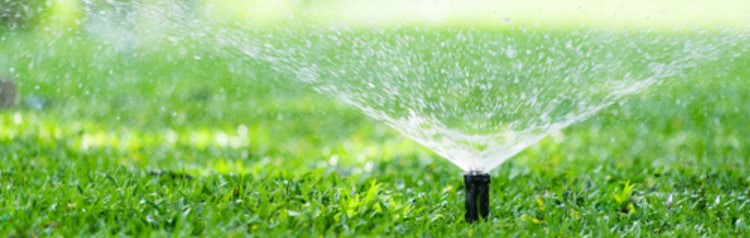

Las estrategias de conservación y ahorro de agua implementadas en el proyecto Hortatech se centran en maximizar la eficiencia en el uso del agua y garantizar su uso sostenible a largo plazo. A continuación, se presentan algunas de las principales estrategias utilizadas:
- Tecnologías avanzadas de riego: Hortatech utiliza tecnologías de riego de última generación, como sistemas de riego por goteo y riego inteligente basado en la demanda de las plantas. Estas tecnologías permiten una aplicación precisa del agua, reduciendo el desperdicio y optimizando la absorción por parte de las plantas.
- Monitoreo en tiempo real: Se implementan sistemas de monitoreo en tiempo real que brindan información precisa sobre el estado y las necesidades hídricas de los cultivos. Esto permite ajustar la cantidad de agua suministrada de manera eficiente, evitando el exceso de riego y optimizando el consumo.
- Reutilización y reciclaje del agua: Hortatech promueve la reutilización y el reciclaje del agua en diferentes etapas del proceso agrícola. Se implementan sistemas de captación y almacenamiento de agua de lluvia, así como sistemas de tratamiento y reciclaje de aguas residuales, reduciendo la dependencia de fuentes externas y optimizando el uso de recursos hídricos locales.
- Educación y capacitación: Se llevan a cabo programas educativos y capacitaciones dirigidas a agricultores y comunidades locales, con el objetivo de promover prácticas de gestión del agua eficientes y sostenibles. Se proporciona información sobre técnicas de riego adecuadas, la importancia de la conservación del agua y la adopción de tecnologías y prácticas más eficientes.
- Mejora de la infraestructura hídrica: Hortatech trabaja en la mejora y optimización de la infraestructura hídrica existente en la Huerta de Valencia. Esto incluye la reparación y modernización de canales y sistemas de distribución de agua, reduciendo las pérdidas por filtración y asegurando un flujo más eficiente del recurso.
- Sensibilización y participación comunitaria: Se realizan campañas de sensibilización dirigidas a agricultores, comunidades locales y usuarios del agua en general. Estas campañas tienen como objetivo crear conciencia sobre la importancia de la conservación del agua y fomentar la adopción de prácticas sostenibles en el uso del recurso.
Estas estrategias de conservación y ahorro de agua implementadas en Hortatech tienen como resultado una gestión más eficiente y sostenible de los recursos hídricos en la Huerta de Valencia. Al optimizar el uso del agua, se logra un equilibrio entre las necesidades agrícolas y la preservación de los ecosistemas acuáticos y los recursos naturales, garantizando así la disponibilidad del agua para las generaciones futuras.
